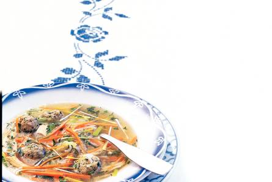

Recept gehaktbrood
Voorgerecht
Nagerecht
Groentesoep met ballen
Ingrediënten
- 2 el verse peterselie
- 1 beschuit
- 300 g half-om-halfgehakt
- ½ el Zaanse mosterd
- 1 middelgroot ei
- 2 winterpenen
- 1 prei
- 50g verse selderij
- 250ml basis voor kippensoep
- 1 liter kraanwater
- 15g witte snelkookrijst
Bereidingswijze
- Snijd de peterselie fijn. Kruimel de beschuit fijn en meng het kruim met het gehakt, de mosterd, het ei, de helft van de peterselie, peper en zout. Draai er gehaktballetjes van. Schrap de winterpeen en snijd de boven- en de onderkant eraf. Snijd ze in stukken van 5 cm en daarna in dunne reepjes.
- Was de prei, snijd in stukken van 5 cm en snijd deze in de lengte doormidden. Snijd de selderieblaadjes fijn en de selderietakjes in kleine stukjes. Leng de basis voor kippensoep aan met het water en breng aan de kook.
- Voeg de rijst toe en laat de soep 5 min. doorkoken. Voeg nu de soepgroenten en de gehaktballetjes toe, laat het geheel nog 10 min. doorkoken. Breng op smaak met peper en zout en bestrooi de soep vóór het serveren met de rest van de peterselie.
